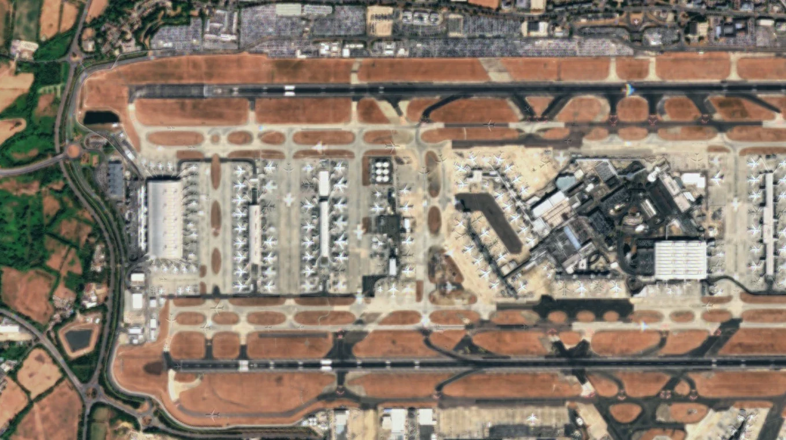
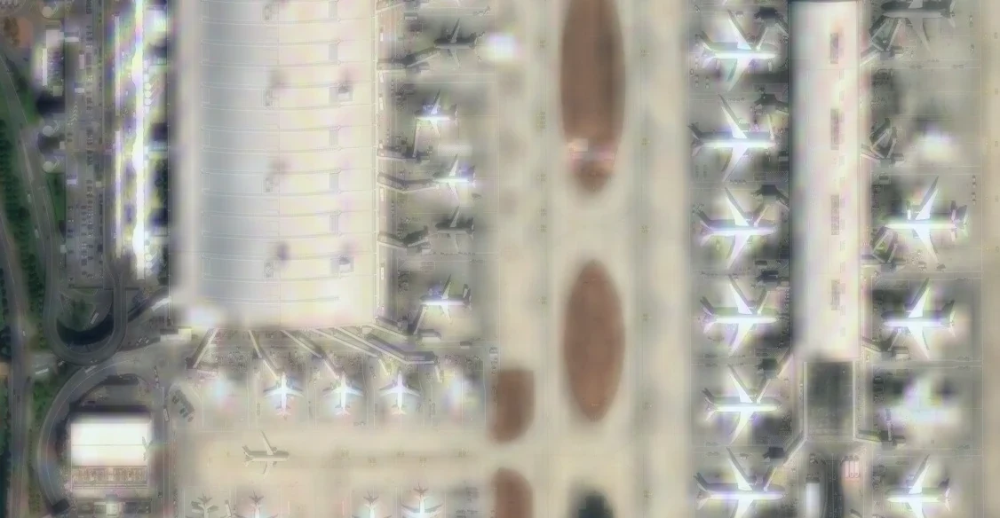

Applied-view Not a raw Sentinel-2 frame: existing high-detail imagery of Paris carried on top of the fresh pass.
A free way to look at the Earth from orbit. Pick a place, pick a day — and with applied-view, see it at a definition a single free pass cannot reach, because existing high-detail imagery is laid over the fresh data.
Every example picture on this page is applied-view, and none of them is original imagery from a single free satellite pass. Applied-view takes existing high-detail imagery of a place and lays it over new Sentinel-2 and other current data, registered to the same ground. The fresh pass supplies what is true now — colour, change, radar, cloud, heat. The existing layer supplies the fine texture that Sentinel-2's 10-metre pixels never held.
So what you are looking at is realistic but constructed: higher definition than the free data alone can give, built by combining two sources rather than by measuring one harder. It is not a photograph taken on the date shown, and the fine detail in it is not evidence of what that pass recorded.
That distinction matters most where the detail is the point. Anywhere on this page that a small feature is picked out — the punctures in a roof, the vehicles at a junction — the texture carrying that feature comes from the existing layer, so it shows what the place looks like, not what the satellite saw on the day.
For scale: Sentinel-2's sharpest bands sample the ground every 10 metres, so a single pixel covers a tennis court. That is the limit every picture on this page starts from, and the reason applied-view exists.
Heathrow, twice. Both frames are applied-view, and both come from the same source — that is the point of showing them together. The first is the airport at a scale its detail supports: terminals, stands, every aircraft on them. The second is the boxed part of it, magnified four times, and it falls apart. Nothing went wrong. It ran out.
Applied-view raises the level of detail you can zoom to. It does not remove the limit, and this is what the limit looks like when you reach it. Any imagery does this eventually; honest imagery shows you where.


Both numbers are checked rather than asserted. The lower frame was located inside the upper one by normalised cross-correlation, scoring 0.995 against 0.783 for the next-best position — a clear enough peak that the pairing is certain — and the box drawn above is that footprint. The magnification follows from the two sizes.
One measurement is worth quoting because the obvious reading of these frames is wrong. Compared at the same ground scale, the two carry the same amount of fine structure. The lower frame is not worse imagery and it has not lost anything; it has four times the pixels and no more information to put in them. That is what a limit looks like, and it is why no amount of zooming is a substitute for a source that actually holds the detail.
Nothing here is a model guessing what a street probably looks like. Every step is either a measurement or a lookup, and each one can be turned off on its own.
Underneath applied-view sits the part that is pure measurement. A satellite never samples the same ground twice in exactly the same place. Each pass lands its pixel grid a fraction of a pixel differently, so every date is a slightly different measurement of the same street. Solve them together and the answer is finer than any one of them could be — and this step invents nothing: it only recovers detail the passes between them already sampled. Applied-view then lays the existing high-detail layer over that, which is where the definition you see in the frames on this page comes from.

 One pass
Six merged
One pass
Six merged
Be clear about what this slider is. It is a test, not a pair of real passes: an existing sharp picture of Paris was sampled coarsely six times, each with its grid landed a third of a pixel apart — the way the app's own tests check it — and then fused with the app's real code. So it demonstrates that the fusion step works on data whose answer is known. It is not a measurement of what six Sentinel-2 passes over Paris would give you, and the sharpness on the right is not evidence of that.
Brightening a picture by curving red, green and blue separately makes them climb at different rates — and the ratios between them are what colour is. Warm roofs slide towards orange, then yellow, then white. EarthViewer curves the whole pixel at once instead, so brightness moves and hue does not.

 Curved per channel
Curved as a pixel
Curved per channel
Curved as a pixel
This one is not a measurement at all — it is arithmetic, and it holds by construction. Brightening the whole pixel means multiplying red, green and blue by the same number, and a hue is defined by the ratios between them, so those ratios come out unchanged whatever the imagery was. Curving each channel on its own multiplies them by different numbers, which is exactly why the colour moves. Drag the handle and watch the roofs.
The same city at the scale you actually want it: boulevards and rail yards from above, then close enough to pick out courtyards, street trees and the traffic on the junction. Both frames are applied-view — at this magnification every one of those courtyards and vehicles is carried by the existing high-detail layer, not resolved by the Sentinel-2 pass beneath it.


An airbase, after a reported strike. This is the hangar roof at full magnification, and it is applied-view: existing high-detail imagery of the base over the fresh pass, then sharpened with the same local-contrast and detail tools the app applies to any imagery.
Say plainly what that means here. A roof panel is a few metres across, so nothing at this scale is resolved by Sentinel-2 — the texture the punctures sit in comes from the existing layer, and this frame is therefore an illustration of the product, not an observation that can date or confirm a strike. For that you would need the original high-resolution source.
The rings are where the app's detector landed, run over the frame as shown: the roof's own brightness taken as the baseline, and anything markedly darker than it, fully surrounded by roof and clear of the shadowed edges, picked out. Two marks met that test. That is a measurement of these pixels, which is not the same as a measurement of the ground.

Existing high-detail imagery registered onto the fresh pass, so a place looks the way it looks while the new data carries what has changed. Every frame built this way is labelled as such.
Sentinel-1 measures the ground with radar, so cloud, smoke and darkness make no difference. Put it beside the optical view and slide between them.
Today's sky from NASA, with the land and sea cut out of it — weather over your imagery instead of a second basemap under it.
Every thermal detection NASA has published in the last day, sized by how much energy the fire is actually radiating.
Right-click anywhere. Worked out from the passes already flown over that point, not from a nominal cycle.
The picture is a rendering; underneath are numbers with units. A click gives you reflectance, backscatter in decibels, NDVI and the rest.
Highlight any part of the imagery and it lands on your clipboard at full resolution, watermarked.
All of it is public, all of it is free, and none of it needs an account. These are the published characteristics of each source — worth knowing, because they set what the app can and cannot tell you.
Every imaging tool has a shape to it. Knowing where this one stops is what makes the part that works trustworthy.
Texture comes from the existing layer, which was recorded at some other time. If you need to know what a place looked like on a particular day, that is the fresh pass only — and the fresh pass is 10-metre.
Damage, movement, anything at the scale of a vehicle or a roof panel: applied-view will render it convincingly and cannot evidence it. For that you need the original high-resolution source.
Zoom far enough past what the existing layer holds and it smears, the same as anything else. The Heathrow pair above is that limit, shown rather than hidden.
Cloud is opaque to Sentinel-2. Merging dates helps, and radar ignores the problem entirely, but a fortnight of overcast is still a fortnight of overcast.
Partly, and the honest answer is that it depends which part you mean. The measurements are real and current: the pass, its dates, the reflectance and radar values under every pixel. The fine texture you see is real imagery too, but of a different vintage — it comes from the existing high-detail layer, not from the pass. Applied-view is those two things combined, which is why the page labels every picture rather than leaving you to guess.
No. There is no upscaling model, no diffusion, nothing inventing plausible detail. Everything on screen came from either a satellite measurement or an existing photograph of that same ground. That is a deliberate choice: a model that invents a convincing street is worse than useless for looking at somewhere real.
For anything at 10 metres and above — a flood, a burn scar, a new construction site, a change in vegetation — yes, and the numbers underneath will back you up. For anything smaller, no. Go back to the pass on its own, read the values underneath the picture, and treat those as the evidence — not the texture laid over them.
Because Copernicus and NASA publish theirs openly and it is genuinely good. The constraint is resolution, not quality or honesty, and applied-view exists precisely to work within that constraint rather than pretend it is not there.
None of the three. The catalogues are public and the app talks to them anonymously. Clone it, run one Python file, and it opens.
There is a demo mode that runs on synthetic imagery, so you can see how everything behaves without a connection. Real imagery needs the catalogues, which means it needs the network.
One Python file. It installs what it needs on first run and opens in its own window. No sign-up, no API key, no token — the imagery is public and so is the catalogue.
git clone https://github.com/Inasjackw321/Sent-2-imagery cd Sent-2-imagery python app.py
Add --demo to explore it offline with synthetic imagery.